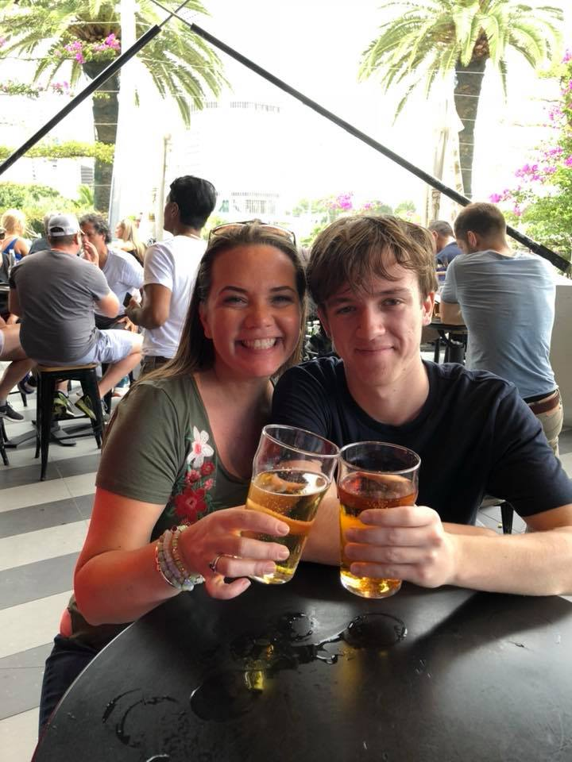
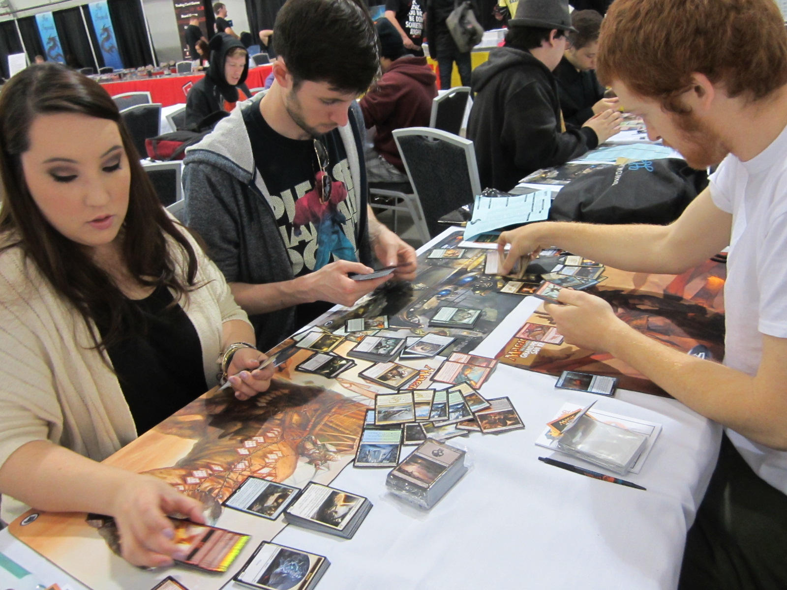

Skyler James Perry
Bio
Marelle Zathrune was an air Genasi from the West overseas. She had a wonderful attitude about her. She was always playful, and full of life. She grew up in an orphanage with a variety of other races, such as Humans, Dwarves, Tieflings, Gnomes, and even some Drow!. As she grew older, she was eventually adopted by a pair of Gnomes, a man and a woman. Her new father taught her how to fish, and her mother how to tailor. With these skills, she worked on her new trades for years until realizing a life of adventure suited her much more than hours at sea, or days with needles. This is a character I wrote for Dungeons and Dragons, a game of the fantasy genre; something I realized I was interested in at a young age. I grew up in Florida/Cape Cod, until eventually moving back down when I was six until I moved to Rhode Island when I was 20. I've played the trumpet in middleschool but have since lost interest. I plan on learning the piano/guitar at some point, and I plan on moving to North Carolina once I have my Bachelors degree so I can get a headstart on my career in a stable housing market with decent climate; I plan on applying for a Network Administrator position, but any job that sounds exciting will likely receive and application from me. I've been to Australia and England, both of which were absolutely amazing trips. I'd give anything to be able to go back to those countries right now.
This is a picture of my mother and I in Australia.

Schooling
- Ezra Baker Elementary
- Wixon Middleschool
- Dennis-Yarmouth Highschool
- Cape Cod Technical Highschool
Hobbies
- Magic The Gathering
- World of Warcraft
- Basketball
If you want to know more about magic the gathering, visit the official website! And if you want to purchase any singles, visit Tcgplayer!